Bienvenue sur le site de la classe de Première NSI du lycée du Parc à Lyon.
Tous les documents sur ce site sont placés sous licence Creative Commons Attribution-NonCommercial-ShareAlike 4.0 International (CC BY-NC-SA 4.0).
Bienvenue sur le site de la classe de Première NSI du lycée du Parc à Lyon.
Tous les documents sur ce site sont placés sous licence Creative Commons Attribution-NonCommercial-ShareAlike 4.0 International (CC BY-NC-SA 4.0).
Python (hors programme de première NSI)
base](#le-transistor-porte-logique-de-base)
Python (hors programme de première
NSI)Ce cours est largement inspiré du chapitre 22 du manuel NSI de la collection Tortue chez Ellipsen auteurs : Ballabonski, Conchon, Filliatre, N’Guyen.
Les circuits d’un ordinateur manipulent uniquement des 0 ou des 1 représentés en interne par des tensions hautes ou basses. Les premiers ordinateurs construits dans la période 1945-1950 sont basés sur une technologie de tube à vide ou tube électrique. En 1947, aux laboratoires Bell, Shockley, Bardeen et Brattain inventent le transistor au germanium un petit composant électronique qui se comporte comme un interrupteur. Les transistors, plus petits et dissipant moins de chaleur, vont supplanter les tubes électriques : en 1954 le germanium est remplacé par le silicium, en 1955 apparaissent les premiers ordinateurs entièrement transistorisés, en 1960 le transistor à effet de champ permet l’intégration de dizaines composants dans un centimètre carré. Les transistors sont ensuite directement gravés dans une plaque de silicium constituant un cicrcuit intégré. En 1965 Gordon Moore futur directeur d’Intel énonce la loi empirique portant son nom qui fixe une feuille de route à l’industrie des mircroprocesseurs : le doublement de la densité d’intégration des transistors tous les deux ans. Cette loi s’est vérifiée jusqu’à présent avec une finesse de gravure d’environ 5 nanomètres en 2020. Le graphique ci-dessous représente l’évolution du nombre de transistors par circuit intégré.

Définition 1
Un transistor possède trois broches : la grille, la sortie (ou drain) et la source soumis à des états de tension haute ou basse qu’on peut assimiler aux valeurs binaires 1 et 0 d’un bit. Si la tension appliquée sur la grille est haute (bit à 1) alors le transitor laisse passer le courant entre la source d’énergie et la sortie et cette dernière passe à l’état de tension basse (bit à 0), sinon la sortie reste en tension haute (bit 1).
Une fonction logique prend un ou plusieurs bits en entrée et retourne un ou plusieurs bits en sortie. Une porte logique est un circuit électronique représentant une fonction logique.
Une table logique représente les sorties produites par une fonction logique pour toutes les entrées possibles.
Un transistor représente une fonction logique dont le bit d’entrée est l’état de tension de la grille et le bit de sortie, l’état de tension de la sortie. La table logique (table 1) associée est celle du NON logique ou Inverseur.
Fichier de test Logisim : transistor.circ.
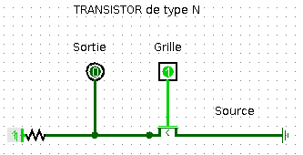
| A | B = NON(A) |
|---|---|
| 0 | 1 |
| 1 | 0 |
Table logique d’une porte NON
Il existe deux conventions de représentation symbolique des portes logiques, une européenne et une américaine.
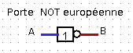
& 
Tutoriel video Logisim : le transistor
Exercice 1
On donne ci-dessous les représentations de deux portes logiques :
Chacune de ces portes logiques comportent deux bits d’entrée : A pour la grille du transistor 1 et B pour la grille du transistor 2 et un bit de sortie.
Compléter leurs tables logiques.
Vérifier avec Logisim et les fichiers porte_NAND.circ et porte_NOR.circ.
Tutoriel video Logisim : porte NAND
Tutoriel video Logisim : porte NOR
| A | B | NAND(A, B) |
|---|---|---|
| 0 | 0 | |
| 0 | 1 | |
| 1 | 0 | |
| 1 | 1 |
| A | B | NOR(A, B) |
|---|---|---|
| 0 | 0 | |
| 0 | 1 | |
| 1 | 0 | |
| 1 | 1 |
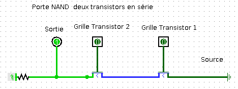
& 
Voici les représentations symboliques des portes logiques NAND et NOR :

& 
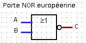
& 
Exercice 2
Fichier de test Logisim : exercice2.circ.
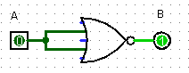
| A | B = f(A) |
|---|---|
| 0 | |
| 1 |
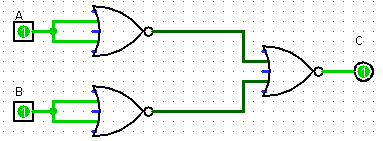
| A | B | C = g(A, B) |
|---|---|---|
| 0 | 0 | |
| 0 | 1 | |
| 1 | 0 | |
| 1 | 1 |
Tutoriel video Logisim : exercice 2
Exercice 3
Fichier de test Logisim : exercice3.circ.
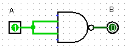
| A | B = f(A) |
|---|---|
| 0 | |
| 1 |

| A | B | C = g(A, B) |
|---|---|---|
| 0 | 0 | |
| 0 | 1 | |
| 1 | 0 | |
| 1 | 1 |
Tutoriel video Logisim : exercice 3
Voici les représentations symboliques des portes logiques AND et
OR :

& 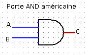

& 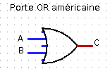
Exercice 4
OR uniquement avec
des portes NOR.AND uniquement avec
des portes NAND.Ainsi chacune des portes, NAND ou NOR permet de construire les
portes NOT, OR, AND. Toute porte logique pouvant s’exprimer à
l’aide de ces trois portes, les portes NAND et NOR sont dites
universelles.
Tutoriel video Logisim : exercice 4
Définition 2
True (Vrai) ou False (Faux) qu’on représente numériquement par
un bit de valeur True ou False. Electroniquement, les valeurs 1 et 0 se traduisent
respectivement par des tensions haute ou basse.Exercice 5
Python ci-dessous pour qu’elle affiche la
table de vérité d’une fonction booléenne à deux entrées. Expliquer
le rôle de la fonction int.def table_verite_2bits(fonction):
print('|{:^10}|{:^10}|{:^15}|'.format('a','b',fonction.__name__+'(a,b)'))
for a in .............:
for b in .............:
print('|{:^10}|{:^10}|{:^15}|'.format(......, ......,
int(fonction(bool(a),bool(b)))))
bool.__or__, bool.__and__ et bool.__not__ sont correctes.In [4]: table_verite_2bits(bool.__or__)
| a | b | __or__(a,b) |
| 1 | 1 | 1 |
| 1 | 0 | 1 |
| 0 | 1 | 1 |
| 0 | 0 | 0 |
Propriété 1
On peut exprimer toute fonction booléenne à l’aide de trois fonctions booléennes élémentaires :
x est un booléen, sa négation est not x en Python.| 0 | |
| 1 |
x et y sont des booléens, leur conjonction est x and y en
Python.| 0 | 0 | |
| 0 | 1 | |
| 1 | 0 | |
| 1 | 1 |
x et y sont des booléens, leur disjonction est x or y en
Python.| 0 | 0 | |
| 0 | 1 | |
| 1 | 0 | |
| 1 | 1 |
Propriété 2
Exercice 6
Réponse A : False and (True and False)
Réponse B : False or (True and False)
Réponse B : True and (True and False)
Réponse C : True or (True and False)
not(a or b) a la valeur True, quelles
peuvent être les valeurs des variables booléennes a et b ?True et TrueFalse et TrueTrue et FalseFalse et Falsea, b et c
l’expression (a or b) and (not c) a-t-elle pour valeur Truea = True b = False c = Truea = True b = False c = Falsea = False b = False c = Truea = False b = True c = True(not A) or B ?(A and B) or (not A and B)(A and B) or (not A and B) or (not A and not B)(not A and B) or (not A and not B)(A and B) or (not A and not B)| A | B | S |
|---|---|---|
| 0 | 0 | 1 |
| 0 | 1 | 0 |
| 1 | 0 | 1 |
| 1 | 1 | 1 |
a
et b dont voici la table de vérité.| a | b | form |
|---|---|---|
| True | True | False |
| False | True | False |
| True | False | True |
| False | False | False |
Quelle est cette formule booléenne ?
a and ba or ba and not(b)not(a) or bExercice 7
Démontrer dans chaque cas l’égalité des expressions booléennes en utilisant les deux méthodes suivantes :
Méthode 1 : en comparant les tables de vérité des deux expressions booléennes ;
Méthode 2 : en utilisant les règles de simplification de la propriété 2.
Exercice 8
On considère la fonction booléenne dont la table de vérité est :
| 0 | 0 | 0 |
| 0 | 1 | 1 |
| 1 | 0 | 1 |
| 1 | 1 | 0 |
OU EXCLUSIF ou XOR. Ce nom vous
paraît-il bien choisi ?Voici les représentations symboliques de la porte logique XOR :
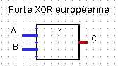
& 
Définition 3
Un circuit logique combinatoire permet de réaliser une ou plusieurs
fonctions booléennes : ses sorties ne dépendent que de l’état actuel de
ses entrées. Les portes logiques NOT, NOR, NAND, AND, OR et
XOR sont des circuits combinatoires.
Il existe d’autres circuits, dits séquentiels, dont les sorties se calculent non seulement à partir de leurs valeurs d’entrée actuelles mais aussi à partir de leurs états précédents : le facteur temps intervient. Ils utilisent des circuits de mémoire pour mémoriser leurs états antérieurs.
Exercice 9
On considère la fonction booléeenne
dont la table de vérité
est donnée ci-dessous :
| 0 | 0 | 1 |
| 0 | 1 | 0 |
| 1 | 0 | 0 |
| 1 | 1 | 1 |
En utilisant la méthode exposée dans l’exercice 8, déterminer une
expression booléenne de la fonction
.
Ouvrir le logiciel Logisim et construire un circuit combinatoire représentant cette fonction booléenne :
NOT, NOR, NAND, AND,
OR ou XOR.NOT, AND ou OR.NOR.Exercice 10
On considère un circuit combinatoire qui possède deux entrées
et
et
quatre sorties
,
,
et
.
La sortie indexée par le nombre dont le bit de poids faible est
et le
bit de poids fort
, est
positionnée à
et les
autres sorties à
. Ce
circuit est ainsi appelé décodeur
bits.
| 0 | 0 | ||||
| 0 | 1 | ||||
| 1 | 0 | ||||
| 1 | 1 |
En utilisant la méthode exposée dans l’exercice 7, déterminer une
expression booléenne de chacune des sorties
,
,
et
,
en fonction des entrées
et
.
Ouvrir le logiciel Logisim et
construire un circuit combinatoire représentant un décodeur
bits.
Exercice 11
Effectuer les additions binaires :
,
,
et
.
Un demi-additionneur binaire 1 bit est un circuit combinatoire qui possède :
La sortie prend pour
valeur le bit des unités et la sortie
le bit de retenue
sortante, lorsqu’on additionne les deux bits d’entrée
et
.
| 0 | 0 | ||
| 0 | 1 | ||
| 1 | 0 | ||
| 1 | 1 |
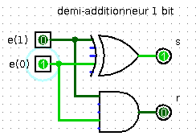
Exercice 12
Un additionneur binaire 1 bit est un circuit combinatoire qui possède :
| 0 | 0 | 0 | |||||
| 0 | 1 | 0 | |||||
| 1 | 0 | 0 | |||||
| 1 | 1 | 0 | |||||
| 0 | 0 | 1 | |||||
| 0 | 1 | 1 | |||||
| 1 | 0 | 1 | |||||
| 1 | 1 | 1 |
Un additionneur binaire 1 bit peut être réalisé à l’aide de deux demi-additionneurs binaires 1 bit :
Compléter les colonnes
,
et
puis
et
de la table de vérité de l’additionneur binaire à 1
bit.
Avec le logiciel Logisim ouvrir le fichier contenant le demi-additionneur de l’exercice précédent.
Add a circuit , le nommer
additionneur1bit puis copier/coller dedans le circuit du
demi-additionneur binaire 1 bit. Compléter le circuit pour
obtenir un additionneur binaire 1 bit.Add a circuit , le nommer
additionneur2bits puis copier/coller dedans le circuit de l’
additionneur binaire 1 bit. Compléter le circuit pour
obtenir un additionneur binaire 2 bits.Python (hors programme de première NSI)Propriété 3
Les fonctions booléennes élémentaires (OR, AND, NOT, XOR)
existent en Python sous la forme d’opérateurs booléens mais sont
également implémentés sous la forme d’opérateurs bit à bit sur les
nombres. Un opérateur bit à bit (bitwise en anglais) s’applique sur
les bits de même poids des représentations binaires de ses opérandes.
| Opérateur booléen | Opérateur bit à bit | Exemple |
|---|---|---|
and , ET |
& |
>>> bin(0b101001 & 0b101010) |
'0b101000' |
||
or , OU |
\| |
>>> bin(0b101001 \| 0b101010) |
'0b101011' |
||
xor , OU EXCLUSIF |
^ |
>>> bin(0b101001 ^ 0b101010) |
'0b000011' |
||
not , NEGATION |
~ |
>>> ~5 #~x retourne -x - 1 |
-6 |
Exemples d’utilisation d’opérateurs bit à bit :
ET bit à bit pour sélectionner uniquement
certains bits, par exemple les bits de rang pairs :>>> bits_pairs = sum(2 ** k for k in range(0, 8, 2))
>>> bin(bits_pairs)
'0b1010101'
>>> bin(183)
'0b10110111'
>>> bin(183 & bits_pairs)
'0b10100010'
OU EXCLUSIF peut servir à masquer / démasquer une partie de la
représentation binaire d’un nombre (on peut l’employer avec tout
objet codé numériquement comme une image ou un caractère).>>> diego = 69
>>> masque = 42
>>> zorro = diego ^ masque
>>> zorro
111
>>> zorro ^ masque
69
Exercice 13
Dans un réseau IP l’adresse IP d’une machine est constituée d’un
préfixe correspondant à l’adresse du réseau (commune à toutes les
machines du réseau) et à un suffixe machine, identifiant la machine sur
le réseau.
Le préfixe réseau s’obtient à partir de l’adresse IP de la machine en
faisant un ET bit à bit avec le masque de sous-réseau.
Par exemple si l’adresse est 192.168.11.12 de représentation binaire
11000000.10101000.00001011.00001011 et le masque de sous-réseau est
255.255.252.0 de représentation binaire
11111111.11111111.11111100.00000000 alors le préfixe réseau est
11000000.10101000.00001000.00000000 soit 192.168.8.0.
On donne ci-dessous deux fonctions outils :
def ip2liste(ip):
"Transforme une adresse IP V4 (type str) en liste d'entiers"
return [int(champ) for champ in ip.split('.')]
def liste2ip(ipliste):
"Transforme une liste d'entiers en adresse IP V4 (type str)"
return '.'.join(str(n) for n in ipliste)
Écrire une fonction de signature prefixe_reseau(ip, masque) qui
retourne le préfixe réseau sous forme d’adresse IP V4 (type str) à
partir d’une adresse IP V4 et d’un masque de sous-réseau.
Écrire une fonction de signature suffixe_machine(ip, masque) qui
retourne le suffixe machine sous forme d’adresse IP V4 (type str)
à partir d’une adresse IP V4 et d’un masque de sous-réseau.
Voici un exemple de résultat attendu :
>>> prefixe_reseau('145.245.11.254','255.255.252.0')
'145.245.8.0'
>>> suffixe_machine('145.245.11.254','255.255.252.0')
'0.0.3.254'
Propriété 4
Python définit également des opérateurs sur les bits d’un nombre, plus
efficaces que les opérations mathématiques équivalentes :
Le décalage de nombre de n bits vers la gauche multiplie
nombre par
et s’écrit
nombre << n.
Le décalage de nombre de n bits vers la droite divise nombre
par et s’écrit
nombre >> n.
Exercice 14
Dans l’algorithme de recherche dichotomique, après division en deux de la zone de recherche, l’algorithme s’appelle lui-même sur l’une des deux moitiés. C’est un algorithme de type Diviser pour régner qui peut se programmer récursivement comme nous le verrons en terminale dans le chapitre sur la récursivité.
Si on note n la taille de la liste, une autre implémentation, non récursive, est la suivante :
on commence la recherche au début de la liste et on avance avec un
pas pas = n // 2 ou pas = n >> 1 jusqu’au premier élément
supérieur à l’élément cherché ;
on repart de l’élément précédent le point d’arrêt et on avance désormais avec un pas divisé par 2 soit :
pas = pas >> 1 ;
on répète en boucle ces instructions jusqu’à ce que le pas atteigne
.
A la fin de de la boucle, on détermine si l’élément précédent le dernier point d’arrêt est l’élément recherché.
Compléter le code de la fonction recherche_dicho2 qui implémente cet
algorithme.
def recherche_dicho2(L, e):
x, n = 0, len(L)
pas = n >> 1
while pas >= 1:
while x + pas < n and .................:
x = ..............
pas = ................
return ............
{kind=link}